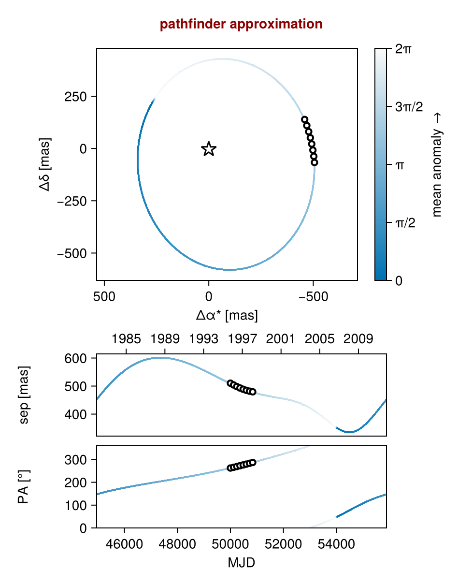
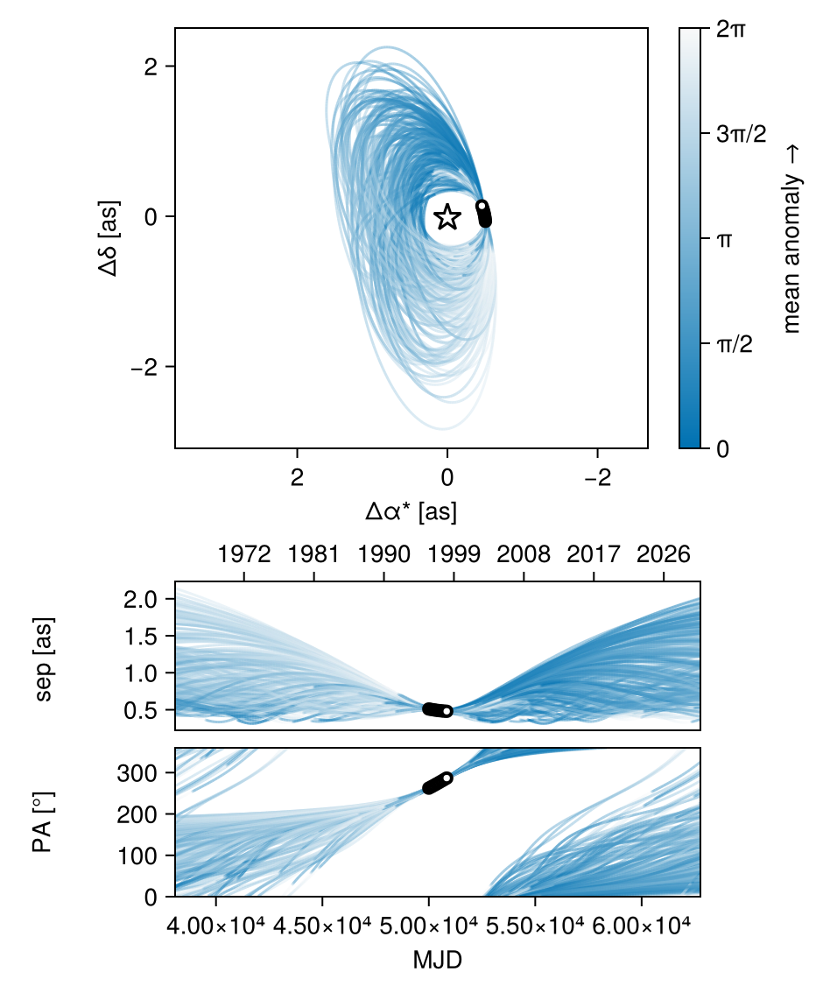
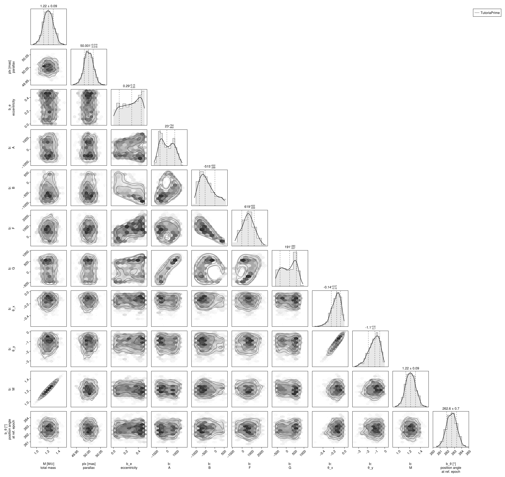
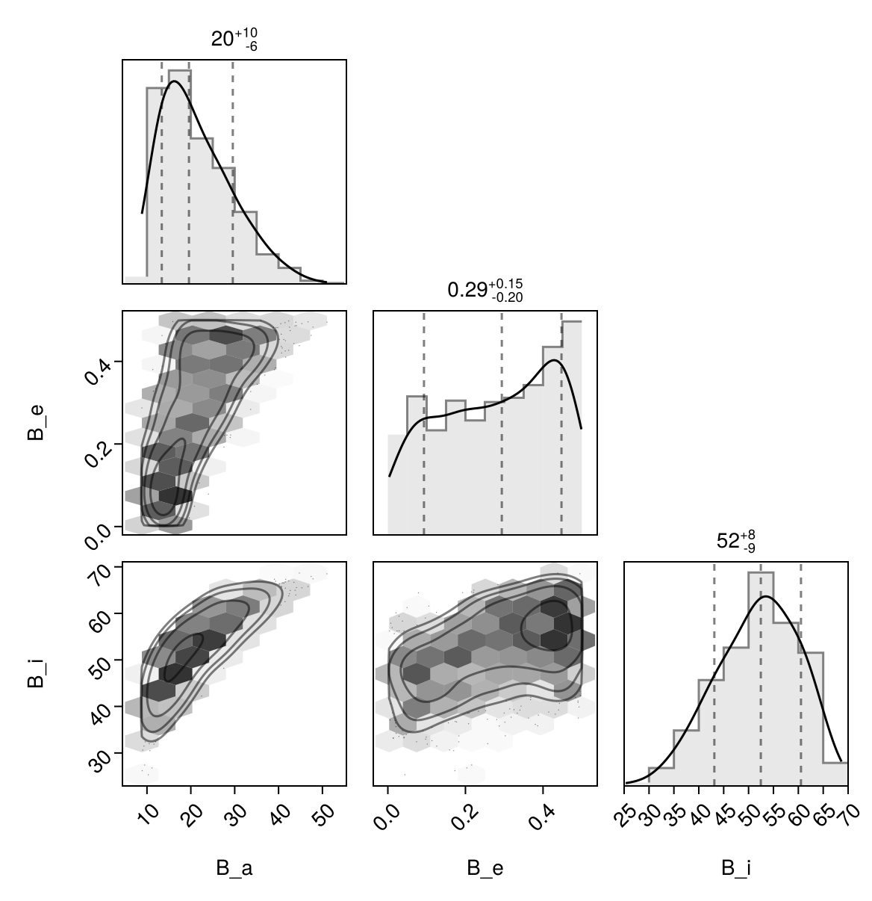

Fit with a Thiele-Innes Basis
This example shows how to fit relative astrometry using a Thiele-Innes orbital basis instead of the traditional Campbell basis used in other tutorials. The Thiele-Innes basis is more suitable then Campbell for fitting low-eccentricity orbits, because it does not have the issues where ω, Ω, and tp become degenerate as eccentricity and/or inclination fall to zero.
At the end, we will convert our results back into the Campbell basis to compare.
using Octofitter
using CairoMakie
using PairPlots
using Distributions
astrom_dat = Table(;
epoch = [50000, 50120, 50240, 50360, 50480, 50600, 50720, 50840],
ra = [-505.7637580573554, -502.570356287689, -498.2089148883798, -492.67768482682357, -485.9770335870402, -478.1095526888573, -469.0801731788123, -458.89628893460525],
dec = [-66.92982418533026, -37.47217527025044, -7.927548139010479, 21.63557115669823, 51.147204404903704, 80.53589069730698, 109.72870493064629, 138.65128697876773],
σ_ra = [10, 10, 10, 10, 10, 10, 10, 10],
σ_dec = [10, 10, 10, 10, 10, 10, 10, 10],
cor = [0, 0, 0, 0, 0, 0, 0, 0]
)
astrom_like = PlanetRelAstromLikelihood(
astrom_dat,
instrument_name = "GPI",
variables = @variables begin
# Fixed values for this example - could be free variables:
jitter = 0 # mas [could use: jitter ~ Uniform(0, 10)]
northangle = 0 # radians [could use: northangle ~ Normal(0, deg2rad(1))]
platescale = 1 # relative [could use: platescale ~ truncated(Normal(1, 0.01), lower=0)]
end
)
planet_b = Planet(
name="b",
basis=ThieleInnesOrbit,
likelihoods=[astrom_like],
variables=@variables begin
e ~ Uniform(0.0, 0.5)
A ~ Normal(0, 1000) # milliarcseconds
B ~ Normal(0, 1000) # milliarcseconds
F ~ Normal(0, 1000) # milliarcseconds
G ~ Normal(0, 1000) # milliarcseconds
M = super.M
θ_x ~ Normal()
θ_y ~ Normal()
θ = atan(θ_y, θ_x)
tp = θ_at_epoch_to_tperi(θ, 50000.0; super.plx, M, e, A, B, F, G) # reference epoch for θ. Choose an MJD date near your data.
end
)
sys = System(
name="TutoriaPrime",
companions=[planet_b],
likelihoods=[],
variables=@variables begin
M ~ truncated(Normal(1.2, 0.1), lower=0.1)
plx ~ truncated(Normal(50.0, 0.02), lower=0.1)
end
)
model = Octofitter.LogDensityModel(sys)LogDensityModel for System TutoriaPrime of dimension 9 and 8 epochs with fields .ℓπcallback and .∇ℓπcallback
Initialize the starting points, and confirm the data are entered correcly:
init_chain = initialize!(model)
octoplot(model, init_chain)
We now sample from the model as usual:
results = octofit(model)Chains MCMC chain (1000×28×1 Array{Float64, 3}):
Iterations = 1:1:1000
Number of chains = 1
Samples per chain = 1000
Wall duration = 7.93 seconds
Compute duration = 7.93 seconds
parameters = M, plx, b_e, b_A, b_B, b_F, b_G, b_θ_x, b_θ_y, b_M, b_θ, b_tp, b_gpi_jitter, b_gpi_northangle, b_gpi_platescale
internals = n_steps, is_accept, acceptance_rate, hamiltonian_energy, hamiltonian_energy_error, max_hamiltonian_energy_error, tree_depth, numerical_error, step_size, nom_step_size, is_adapt, loglike, logpost, tree_depth, numerical_error
Summary Statistics
parameters mean std mcse ess_bulk ess_tai ⋯
Symbol Float64 Float64 Float64 Float64 Float6 ⋯
M 1.2202 0.0905 0.0037 605.5729 658.438 ⋯
plx 50.0008 0.0194 0.0006 1080.5608 594.001 ⋯
b_e 0.2793 0.1473 0.0108 190.2874 264.476 ⋯
b_A 60.5969 638.2055 74.5742 82.3654 294.110 ⋯
b_B -428.9139 390.9356 46.8823 73.4510 108.770 ⋯
b_F 611.9444 620.8128 89.5755 48.0356 107.043 ⋯
b_G 144.7454 392.4463 48.7953 69.6121 241.558 ⋯
b_θ_x -0.1583 0.0871 0.0046 382.5355 464.054 ⋯
b_θ_y -1.2174 0.6484 0.0336 388.3573 456.032 ⋯
b_M 1.2202 0.0905 0.0037 605.5729 658.438 ⋯
b_θ -1.6999 0.0122 0.0005 584.9512 739.535 ⋯
b_tp 31549.6167 21876.3913 2344.3835 126.1263 322.257 ⋯
b_gpi_jitter 0.0000 0.0000 NaN NaN Na ⋯
b_gpi_northangle 0.0000 0.0000 NaN NaN Na ⋯
b_gpi_platescale 1.0000 0.0000 NaN NaN Na ⋯
3 columns omitted
Quantiles
parameters 2.5% 25.0% 50.0% 75.0% ⋯
Symbol Float64 Float64 Float64 Float64 F ⋯
M 1.0379 1.1568 1.2191 1.2825 ⋯
plx 49.9625 49.9882 50.0006 50.0137 5 ⋯
b_e 0.0168 0.1590 0.2937 0.4137 ⋯
b_A -938.9380 -515.3864 23.1230 625.0721 120 ⋯
b_B -976.5446 -720.4530 -515.2707 -196.3497 43 ⋯
b_F -529.9648 203.7292 619.0317 1026.8956 183 ⋯
b_G -509.2957 -207.4563 191.2900 505.2777 70 ⋯
b_θ_x -0.3622 -0.2114 -0.1448 -0.0935 - ⋯
b_θ_y -2.7394 -1.6318 -1.1355 -0.7226 - ⋯
b_M 1.0379 1.1568 1.2191 1.2825 ⋯
b_θ -1.7241 -1.7084 -1.6998 -1.6915 - ⋯
b_tp -23938.2140 21370.7033 40919.3392 48310.1097 4976 ⋯
b_gpi_jitter 0.0000 0.0000 0.0000 0.0000 ⋯
b_gpi_northangle 0.0000 0.0000 0.0000 0.0000 ⋯
b_gpi_platescale 1.0000 1.0000 1.0000 1.0000 ⋯
1 column omitted
Notice that the fit was very very fast! The Thiele-Innes orbital paramterization is easier to explore than the default Campbell in many cases.
We now display the results:
octoplot(model,results)
octocorner(model, results, small=false)
Conversion back to Campbell Elements
To convert our chain into the more familiar Campbell parameterization, we have to do a few steps. We start by turning the chain table into a an array of orbit objects, and then convert their type:
orbits_ti = Octofitter.construct_elements(model, results, :b, :) # colon means all rows1000-element Vector{ThieleInnesOrbit{Float64}}:
ThieleInnesOrbit{Float64}(0.44231795327480344, 34726.117083682446, 1.2165062142888161, 50.01138681352284, 646.0502238975844, -101.95249953659648, -65.09400384678275, 605.1178538814809, -5.618495059897439, -7.382762428340217, 17783.62506867759, 0.12904756058366437, 1.6081893173064603)
ThieleInnesOrbit{Float64}(0.4493635996672041, 49560.48281398082, 1.2113341156863542, 49.99778321549019, -308.3561054314087, -881.9322962278852, 599.2075681780888, -215.0342146392576, 0.14261986655389097, -13.677586864640366, 26808.85202672079, 0.08560356971495642, 1.6223935693336826)
ThieleInnesOrbit{Float64}(0.36536101979792174, 49859.1871682089, 1.2875519132979152, 50.00434987820273, -156.11894882981682, -772.4586180814074, 517.986478681677, -109.9839957649232, 0.14014769963009935, -11.673025479067924, 20141.09855414161, 0.11394281336136143, 1.466764459490631)
ThieleInnesOrbit{Float64}(0.4005656199763103, 49612.678580562744, 1.1912965603728705, 50.01649538786999, -252.1819350711358, -840.0512438387913, 572.5558166542472, -121.00010696220667, -1.301585733297961, -13.126682163638787, 24675.85598262041, 0.09300319450169028, 1.5285544254646664)
ThieleInnesOrbit{Float64}(0.2937160097719907, 32610.46189865915, 1.128745655193953, 50.00300083648278, 129.13120009209436, -669.654114846399, 500.16803578152116, 204.33536086636983, -3.2358715191145233, -8.929655560825706, 18043.09008938295, 0.12719181814636873, 1.353411291015014)
ThieleInnesOrbit{Float64}(0.42571074978095885, 26338.364370079573, 1.3136843816426957, 50.003376037457386, -90.27158340011083, -878.9903860933246, 578.4279615399605, -22.25760046111845, -0.975496074606796, -13.386822623636444, 23726.76963444666, 0.09672338328415117, 1.5756159500904312)
ThieleInnesOrbit{Float64}(0.4248206353319053, 49916.16186725982, 1.3060893180008724, 50.001154094821295, -153.9932684397669, -860.7444112767485, 581.197261206698, -91.47321458333263, -0.3327297886383145, -12.941324810803794, 23379.400463652113, 0.098160491198877, 1.5739047633992387)
ThieleInnesOrbit{Float64}(0.06976834125901213, 48024.47443183406, 1.0332469347308384, 50.00272740316724, -514.2277300634195, -406.0201890106074, 422.7477978027343, -338.78290854434283, -3.8420141262698997, -8.310977335313725, 18131.240624225222, 0.12657343647963473, 1.0723814986920008)
ThieleInnesOrbit{Float64}(0.11633745235498856, 48454.56268342635, 1.0676387667112468, 49.96897648750521, -413.7713426746698, -402.0220874800361, 273.53699207492144, -375.02905151133433, 2.0995504224183814, -7.170083924754225, 14210.135769374247, 0.16149975416796478, 1.1239694920350733)
ThieleInnesOrbit{Float64}(0.14671963196966914, 48131.46499760407, 1.0760954218705718, 50.02340467984083, -506.9534538040199, -430.4888776236035, 310.38685153437336, -377.690216721404, 0.2322147848410466, -9.017253820335078, 17073.27247842224, 0.13441672862351114, 1.1592650613985669)
⋮
ThieleInnesOrbit{Float64}(0.4046286173166776, -22117.912129151882, 1.363798349598282, 50.02046824542519, 426.627508863788, -742.2792729131203, 1824.9285132339492, 480.3760665317254, -33.984670845488424, 4.962781307938568, 73414.25075148931, 0.03126005387177214, 1.5359843057358364)
ThieleInnesOrbit{Float64}(0.41647738896612807, -15225.697582284425, 1.2106996103249021, 50.01319819441066, 393.0083238986943, -745.6695707634348, 1626.1023382152678, 503.0845655199296, -29.779578813964456, 3.5433357815874142, 66444.69137318784, 0.03453900358356407, 1.558030583810393)
ThieleInnesOrbit{Float64}(0.2836508519848218, -9124.813538237308, 1.3937189201821685, 49.996580508448545, 318.1154828527585, -636.7841115997966, 1638.4046130263146, 316.60166977860564, -30.47768098993, 4.195052507325976, 60364.08456549673, 0.03801819326784086, 1.3386316293340172)
ThieleInnesOrbit{Float64}(0.21581655809128752, 3137.7599714489916, 1.399584381545794, 49.999091441014826, 309.6137280386579, -583.8095049014365, 1409.6486944732778, 249.95113377115138, -25.796789941337444, 4.504952733956591, 48180.32922583642, 0.04763216587189071, 1.2451600920637764)
ThieleInnesOrbit{Float64}(0.43671100794574685, -21437.321787425055, 1.3175772077833539, 50.01853750754097, 434.3000462006314, -772.122815930158, 1785.7898602112286, 497.6335495209666, -32.902461958650065, 4.753983315235875, 72683.20125532895, 0.03157446829268661, 1.597052075558097)
ThieleInnesOrbit{Float64}(0.10271080521434306, 49766.35101957834, 1.1745888184545856, 50.01367852601978, -137.83833633059865, -576.9366574029752, 619.2953393508584, 60.861977449276736, -7.466703882230132, -6.450517208205657, 17682.330321424502, 0.1297868206130459, 1.1085737637770077)
ThieleInnesOrbit{Float64}(0.16701502479939928, 19947.023970235212, 1.2160038468345296, 50.00854750992469, 83.47698611165848, -572.6405941047699, 999.471374628905, 210.675333692493, -16.85405026083297, -0.882771115841318, 30618.776073516696, 0.07495183438871406, 1.1836400174863027)
ThieleInnesOrbit{Float64}(0.3890873522108015, 49838.77198686222, 1.0504985822977417, 49.99648904653679, -168.11575862125005, -842.9561972789113, 1376.4805619184124, 208.75052989021142, -23.02085653865813, -7.079368974261586, 54884.90645250046, 0.04181356190218651, 1.507909301949052)
ThieleInnesOrbit{Float64}(0.0912642084256826, 25762.82441535796, 1.3565376771044972, 49.989730960634816, 196.42478435055003, -506.21512062232404, 900.3642988520459, 221.46546321578543, -15.13178740610484, 1.7121916440976577, 25210.78942275941, 0.09102981247289144, 1.0958374515511107)Here is one of those entries:
display(orbits_ti[1])We can now make a table of results (and visualize them in a corner plot) by querying properties of these objects:
table = (;
B_a = semimajoraxis.(orbits_ti),
B_e = eccentricity.(orbits_ti),
B_i = rad2deg.(inclination.(orbits_ti)),
)
pairplot(table)
We can also convert the orbit objects into Campbell parameters:
orbits_campbell = Visual{KepOrbit}.(orbits_ti)
orbits_campbell[1]KepOrbit{Float64}
─────────────────────────
a [au ] = 14.2
e = 0.44231795
i [° ] = 40.7
ω [° ] = 217.0
Ω [° ] = 141.0
tp [day] = 34700.0
M [M⊙ ] = 1.22
period [yrs ] : 48.7
mean motion [°/yr] : 7.39
──────────────────────────
plx [mas] = 50.0
distance [pc ] : 20.0
──────────────────────────